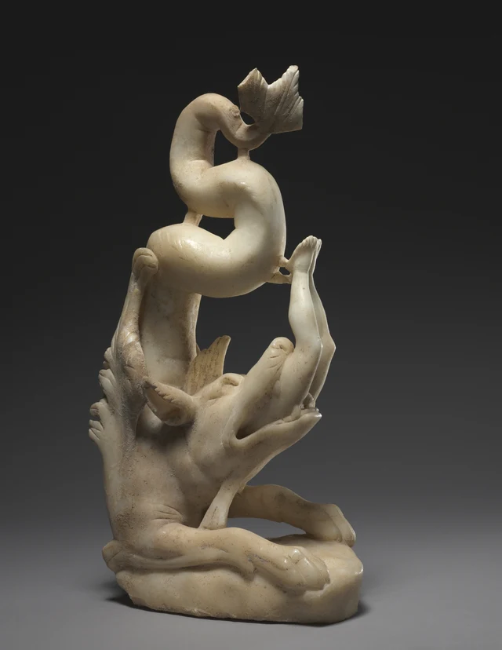
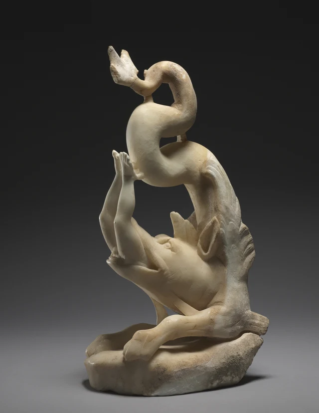
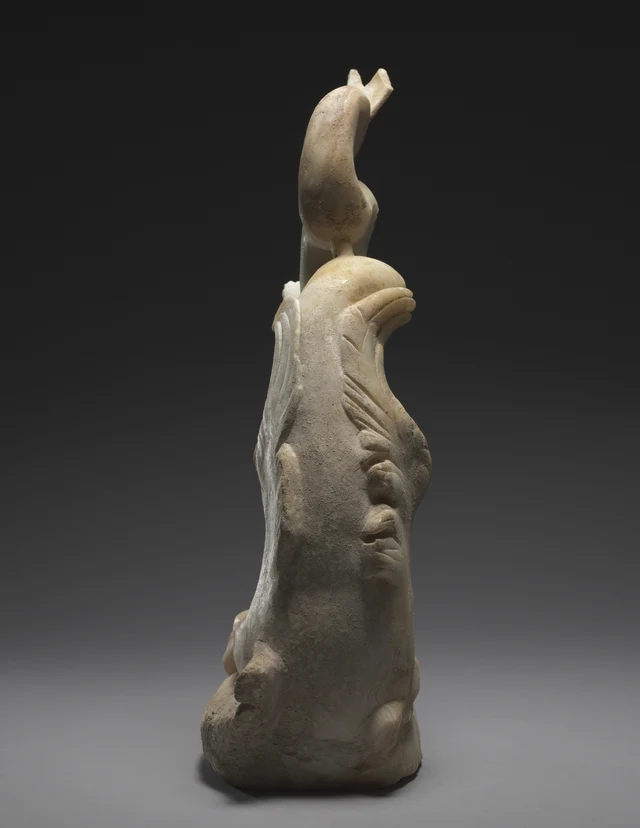

最高處的東西不是人的腳。
先看那一對併攏朝上的腳，再沿著它們向上找：還有一段粗壯的彎曲形體，繞了幾道彎，最後展開成扇形的尾端。人的身體倒懸在下方，頭已經不見了。海怪張著嘴，仰起吻部，前爪卻低低地落在底座上。
一個人在向下消失，一條尾巴在向上展開。

我們很容易把這件作品概括為「海怪吞人」。但吞嚥通常讓人想到一張嘴和一個可以容納食物的肚腹；這裡，佔據大部分高度的卻是盤曲的尾部。它把我們從嘴邊引開，又把目光帶回嘴邊。這件雕塑的力量，在於把一次將要消失的動作，組織成一個始終可以觀看的、向上生長的形體。危急的故事和耐看的形狀並沒有分開。
作品做於三世紀末。故事中的約拿違背了上帝要他去尼尼微宣告審判的命令，被拋入海中，繼而遭海怪吞下。館方將這裡的怪物辨認為古代地中海圖像傳統中的ketos，而非現代動物分類裡的鯨；約拿故事又被早期基督徒讀作復活的預示。這兩種傳統在同一件大理石雕塑裡相遇。具體原陳設地點並無可靠定論，因而不必先替它搭起一座教堂，才能看懂它怎樣發生作用。館方說明；策展人談約拿大理石雕群
一 朝上的腳，沒有立足之處
先暫時不追尾巴，只看人的雙腿。
兩條腿靠得很近，但並非一根直線。膝部有小幅度的彎折，小腿再向上伸，腳尖擠在輪廓的高處。能夠辨認足部、腳趾和小腿的收細，正使這個倒置更鮮明：這些都是我們熟悉的、通常與站立和行走有關的形狀，眼下卻全部離開了地面。
圖1裡，海怪的前肢向兩邊伸展，爪部壓低在底座上；人的腳遠遠懸在它們上方。兩種「腳」被安放在相反的位置。海怪擁有落點，人的腳卻不能自行落地；他的形體被接到了吞噬他的海怪上。故事中的威脅於是也成了體積之間的關係：哪一個身體佔住了底部，哪一個身體失去了自己的支撐。
但兩腿沒有向外大幅劈開，也沒有在空間裡形成四散的輪廓。它們構成一束相對緊密、略有彎折的向上線條，與海怪上方厚厚的迴轉並排。若只用「掙扎」概括它們，會漏掉這種收束。雕塑沒有把危險鋪開到四周，而是把它集中在很窄的範圍內，讓身體像即將被收走的最後一段長度。
這裡尤其值得記住實物的大小：整件只高五十公分左右。照片放大以後，雙腳和巨口容易顯得像一場龐大的搏鬥；在這樣的實際尺度裡，腳趾、膝部和嘴沿必須在一個小型物體上分辨開來。強烈的情節並不靠龐然大物的尺寸壓住觀看者，而靠近處幾段清楚的形狀，使我們迅速知道發生了什麼。
再看人與怪物之間的比例。海怪並沒有一個像鯨那樣寬大的腹部等著把人裝進去，狹長的身體反倒不斷折回。它不是一張供我們檢查吞嚥是否符合生理結構的模型。它把「吞下去」所需的關係提煉出來：張開的嘴、進入其中的人、仍留在外面的腳。正因為其餘身體不再向我們交代，留下來的這一小段才有了時間感。
二 嘴沿是一道正在移動的界線
從另一側看，兩腿與嘴的相接處更加集中。

嘴的開合不是一個漆黑的圓洞。長長的上下顎向上分開，人身斜著進入其中；嘴沿的一側緊貼人體，另一側則顯出較暗的窄隙。我們不是隔著洞口看到完整的約拿，而是看見人體到這裡為止。這條邊緣把可見與不可見分開，也讓眼前的姿態有了先後：頭已經進去，腿還在外面。
沒有運動，仍然能看見過程，因為這道界線尚未把人徹底收走。
如果只剩張開的空嘴，吞嚥可能已經完成，也可能尚未開始；如果整個人都在嘴外，又會成為一次捕捉。現在保留的長度非常具體。它使觀看停在兩個結果之間，而不是用一個完整的人物形象去說明「約拿曾經遇險」。我們看見的正是遭遇發生到某一步的樣子。
這一點也解釋了為什麼沒有人的面孔，情節仍然鮮明。海怪有可以辨認的眼部和嘴，人物卻不能用表情回應。觀看者的注意力被迫移到兩種身體接觸的地方：嘴怎樣圍住人，腿怎樣從那裡繼續向外延伸。人的處境不是由臉上的恐懼替我們說出來，而是由他還能佔據多少外部空間表現出來。
知道故事後續的人，會在這裡預先想到約拿獲釋。克利夫蘭還保存著另一件《約拿被吐出》，表現海怪將他吐出的場面。那是另一件物體，不是本件雕塑轉到另一面後會出現的結局。《約拿被吐出》館藏記錄 本件停住的階段仍然獨立成立；後來的生還沒有把嘴邊此刻的危險取消。
三 會游動的曲線，必須在石頭裡站穩
人的雙腿把我們帶向上方，那裡卻不是出口，而是海怪自己的尾巴。
從圖2中較低處向上追，長形的身體沿背後升起，接著向畫面左方鼓出，再向右折回，最後縮細並托出尾鰭。它幾次改變方向，但每次轉折都帶著飽滿的厚度。遠看像一道流動的線，近看卻是一連串佔據空間的圓轉體積。它們既圍出空處，也壓縮了空處。
人在這道迴轉旁邊顯得更窄。尾部的彎曲從上面靠近雙腳，使本來可以向上伸展的方向也受到包圍。嘴從下面吞入，尾巴在上方折回；即使不把海怪想成有意用尾巴圍困約拿，整個構圖也已經把人的外部空間收緊了。
再留意幾個不那麼搶眼的小連接。尾部兩段相近的地方，有短短的石質連接跨過空隙；人的腳邊，也可以看見通向海怪曲體的小接點。它們不像嘴和爪那樣立即進入故事，卻參加了我們對這件石雕的認識。顯得懸空的部分並非處處獨立，曲線之間仍有實物相接。照片不足以確認每個接點的製作或修復年代；這裡能確認的是，今天這個可見形體並不是一根不受牽繫的自由曲線。
於是出現了一種特別的觀看節奏。眼睛順著長尾往上滑，遇到小接點，又意識到自己正面對石頭。它既要像動物一樣轉彎，又要作為一個物體保持連接。流動感不是材料消失以後才產生的，反而是在這些曲體、間隙和相接處共同存在時產生的。

圖3使這件事更實在。從這個方向，人的腿和巨口幾乎退到了物體另一邊，輪廓變得狹長。海怪的背沒有鋪滿一整面均勻的細鱗，而是用局部的凸起、成組的斜槽和邊緣的起伏，把一段長表面分出變化。光在寬面上延續，在溝槽處中斷。前兩圖裡令人目光轉彎的身體，這裡也有一段相當沉實的背。
這張照片的作用，不在於補出一個藏著秘密的「真正背面」。它讓我們核對前兩圖容易製造的印象：那一大團迴旋不是四面同樣寬闊的球狀物，幾個主要體積的厚薄與排列有明顯方向。雕塑把長尾、嘴和雙腿組織在一起，既容許某些方向清楚講述吞嚥，也容許另一些方向首先顯出石頭的連續體量。
這並不能替我們復原古代觀眾站在哪兒。原陳設不明，三張照片也不是完整的環繞記錄。但它足以說明，一張寬面的照片之所以能把情節講得那麼清楚，有賴於這個立體形狀在深度上的組織。
四 海怪為什麼如此耐看
如果危險只需要一張血盆大口，這件雕塑在尾巴上花費的形狀就太多了。
怪物的身體裡有許多熟悉的部分：長吻、突出的耳、落地的前爪、盤曲的長尾，以及末端展開的鰭狀形體。它們不屬於一種我們能在自然界找到的普通動物，卻各自給眼睛一條可追蹤的路線。前爪把底部攤開，背部向上收起，尾巴用大幅曲線把高度填滿，尾端再向外展開。這種展開與收攏，使它擁有超出「可怕」一詞的吸引力。
尤其是尾巴。我們可以沿著它從下往上走，也可以從扇形尾端向下追，經過一道較窄的彎，再經過更粗的迴旋，最後回到張嘴的頭部附近。它不斷使目光延遲抵達吞嚥發生的地方。約拿所剩無幾的外露身體，與海怪可以反覆巡看的長身體，分配到了很不相等的觀看時間。
這種不相等，是本文認為最值得保留的緊張。海怪佔據了形狀上的豐富，遇險的人卻被壓縮成嘴外的一束腿。我們可能一邊知道它在吞人，一邊仍被它的曲線吸引。稱讚這些轉折，不等於贊成故事裡的傷害；然而，假如只說「這個形狀很優美」，也會把雙腿所帶來的不安擦掉。兩種感受在同一件小雕塑上同時發生，不能用一個褒義或貶義詞互相抵銷。
古代ketos形象進入約拿故事，正讓這種形狀的豐富有了歷史上的來路。早期基督教內容並沒有使既有的海怪造型全部退場；新的敘事情境使用了熟悉的怪物身體。館方將約拿大理石雕群放在復活的解釋中理解；這種閱讀把危險接到它之後的獲救，卻不必改變海怪既有的身體。策展人說明
對知道生還結局的觀看者，眼前的吞嚥還會多出一種反差：奪去人的怪物，也是故事裡暫時容納他、隨後讓他重回外部世界的怪物。可這層意義不能靠把怪物說成溫和來獲得。它仍有一張把人收走的嘴；正因為危險的形狀如此明確，後來的解救才不只是一個無須經過危機的抽象承諾。
因此，這件雕塑不必在「驚險故事」和「裝飾性的曲線」之間選一個。它把吞嚥豎起來，讓人向下消失，讓怪物向上展開，並用穩固相接的大理石把兩條方向停在一起。那雙沒有立足之處的腳，最終使高高揚起的漂亮尾巴無法成為無事發生的花飾。
可選閱讀 認出吞嚥，等於看完了嗎？
可以在螢幕上做一個很小的比較：把圖1縮小到只夠看清整體輪廓，再放回能夠辨認腳趾與石質小接點的大小。這裡改變的是照片的顯示大小，不是把原作設想成另一件尺寸不同的雕塑。
在較小的圖像裡，尾巴的大幅迴轉、張開的嘴和朝上的雙腿仍可能讓我們認出「海怪吞人」。但腳趾的分隔、嘴沿與人體之間的窄隙，以及盤曲之間的小連接，會較早變得難以辨認。故事的基本資訊可以保留下來，細節之間的關係卻未必同時保留。
把圖放大以後，再問：增加的只是資料量嗎？小接點會使長尾的懸空顯得沒有那麼自由，腳趾的可辨又讓我們更具體地感到這是一雙人的腳。它們不改變題材名稱，卻能改變曲線的輕重感，以及那個被吞的人與我們相距多遠。並不是任何一處放大後的細節都同等重要；重要的是它有沒有改動我們對整體關係的判斷。
這也使「我已經認出它表現什麼」與「我已經看過它如何成立」分開。題材明確不保證形狀耐看，圖像細節多也不自動保證作品更好。對本件而言，值得繼續檢驗的是：粗看的迴旋，能否經受近看時那些連接、厚度與人體細節的追問。
SAE美學總論把理解、愉悅與美區別開來。由這件作品進入，可以先把問題落在此處：吞嚥的故事在縮圖中已能辨認，那麼重獲細節以後，究竟多看到了哪一種不可被題名代替的關係？這是一條從具體比較出發的追問，不是給作品評定理論等級。SAE美學總論
圖像與資料說明
本文依據克利夫蘭藝術博物館提供的同一件大理石雕塑的三張照片細讀，包括兩側斜視及後側窄面；各圖長邊3400畫素。圖片保留館方下載檔案，未調色、重壓、補繪或生成。本文沒有現場觀察或觸摸作品；光照、鏡頭、遮擋和取景會影響表面與深度的呈現，三圖也不構成完整360度記錄。
本文未把相關的《約拿被吐出》等作品混作本件的其他視角，也未依據未經證實的原陳設推演噴泉、墓葬或教堂中的觀看過程。圖像來源與許可見圖像登記，資料出處見參考資料。本文的形式解讀不代表館方背書。